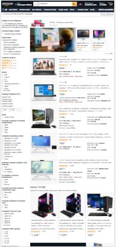

Hick's Law
Amazon Store
I choose Amazon as a good example of the Hick's Law because of the quantity of options that the store has, there is a lot to see, but the layout of the site makes it very easy to start your search, for example, the search bar is right there at the top very visible and easy to find, to choose a specific department to search in is right there in besides the search bar, and you can quickly customize your search with filters, like you can see in the screenshot by choosing the filters you want. At the end a site that could end up being overwhelming and hard to navigate, is easy to use because the website has narrowed down things to choose with an efficient website layout.
Fitts' Law
Apple StoreFitts' Law is basically the relation between clickable link size and mouse pointer distance for efficient browsing, apple with there very visual and simple menu design is a great example of this, you can see in the screenshot that the names of the products are small but not to small, and when you click on a name there is bigger visual representations to choose, all close and very fast to get to, also all images are themselves clickable links, so basically there is little distant for the mouse pointer to travel before it reaches places of interest.
Rule of Thirds
Playstation StoreI love how many images the PlayStation store has, and because we are talking of videogames we can expect beautiful art pieces as the game covers! Art is in many ways symmetry, and that is what the rule of thirds gives us, if we look at the screenshot and imaging a 3x3 grid we will see the character of Elden Ring and the Logo of the game, in focal position, then we have a little to the left and lower the price and the buy it button ready for us eager gamers, and just like that they used the rule of thirds to make us look where they wanted!